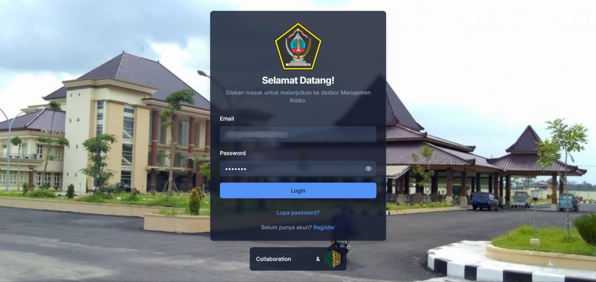
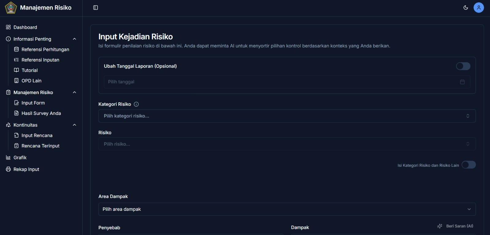
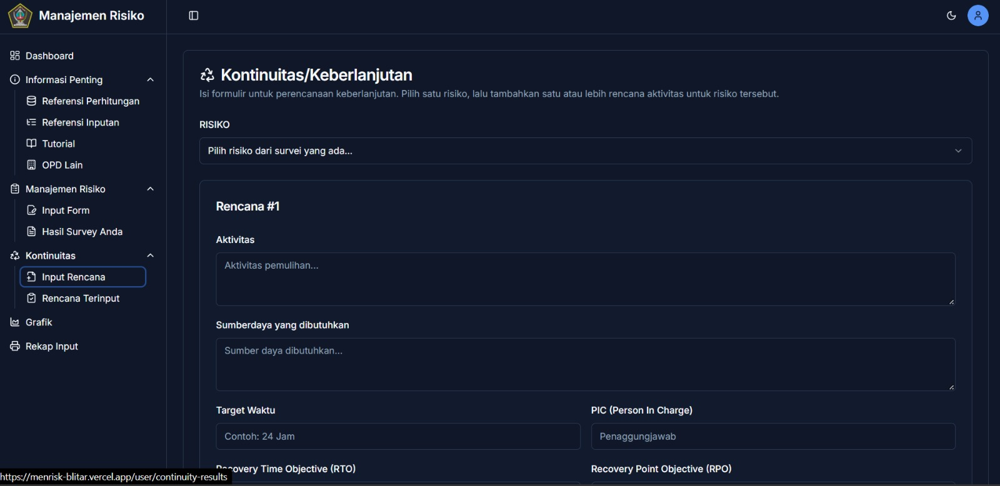
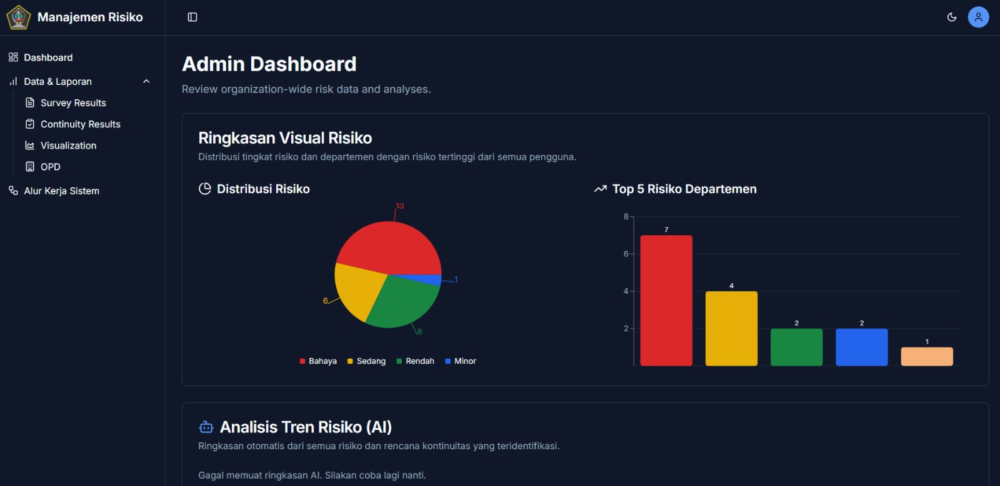
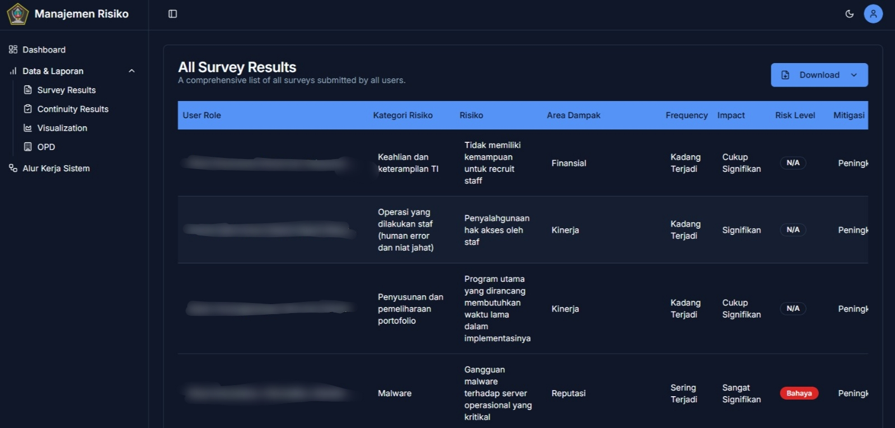
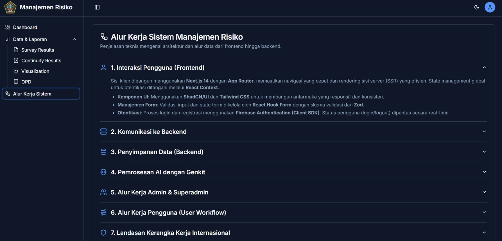

IT Risk Management System
Next.js
CSS
HTML
Firebase
Vercel
Web Development
Project Description
The IT Risk Management System is a web-based application developed for the Blitar Regency Government to support information technology risk management processes. The platform facilitates the identification, documentation, and monitoring of IT risks through a centralized digital system.
Screenshots






Key Features & Impact
- Risk Identification: Facilitates the digital identification and recording of information technology risks.
- Centralized Risk Documentation: Provides a centralized platform for organizing and documenting IT risk information.
- Risk Monitoring: Supports the monitoring of identified IT risks through a digital management system.
- Impact: Successfully developed and implemented a web-based IT Risk Management System for the Blitar Regency Government, supporting more structured and centralized IT risk management.